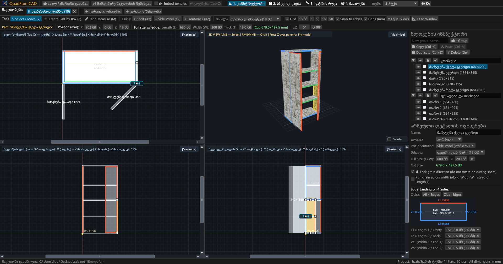
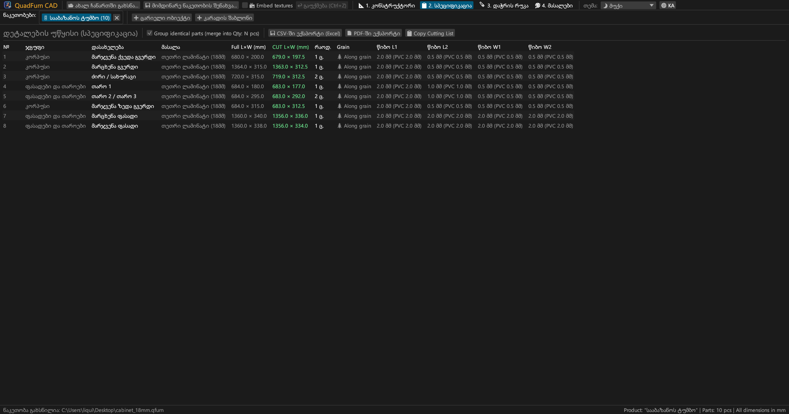
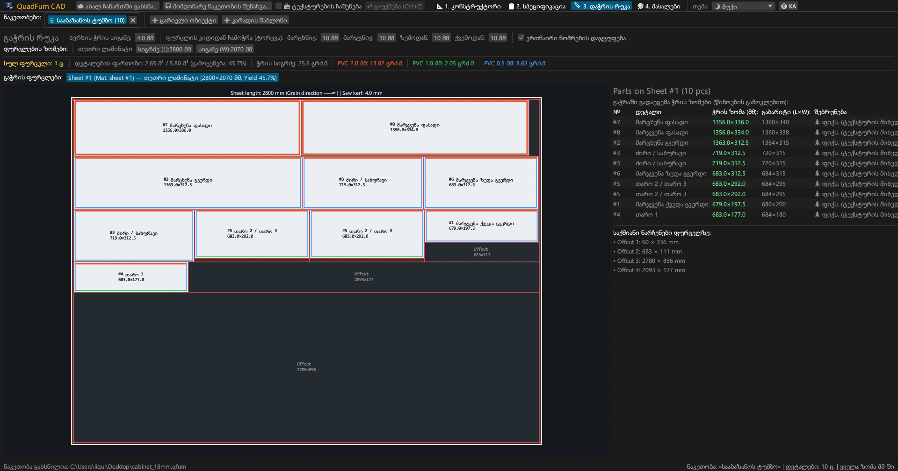
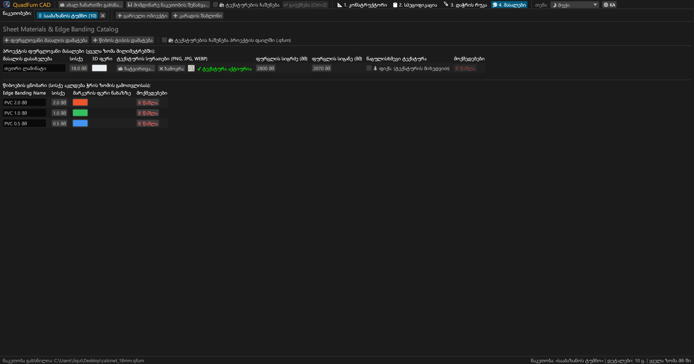
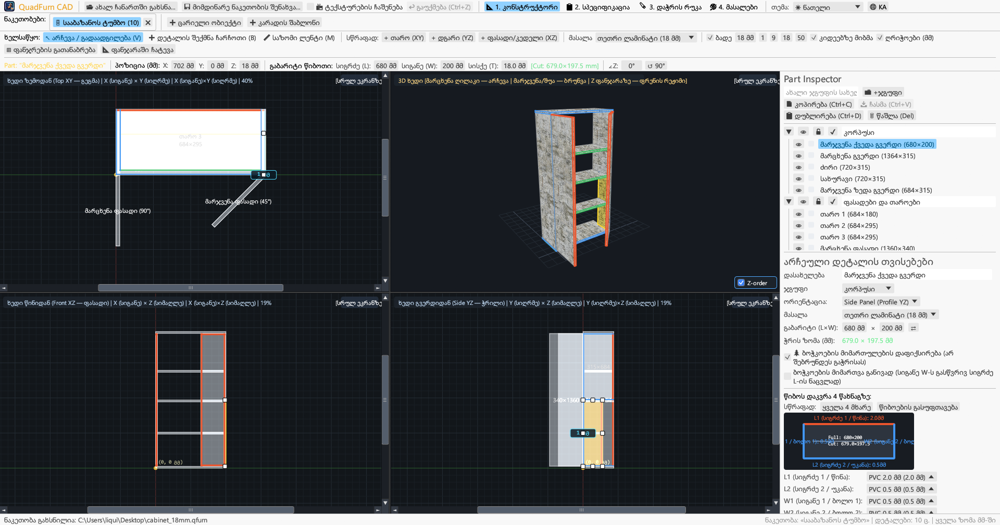
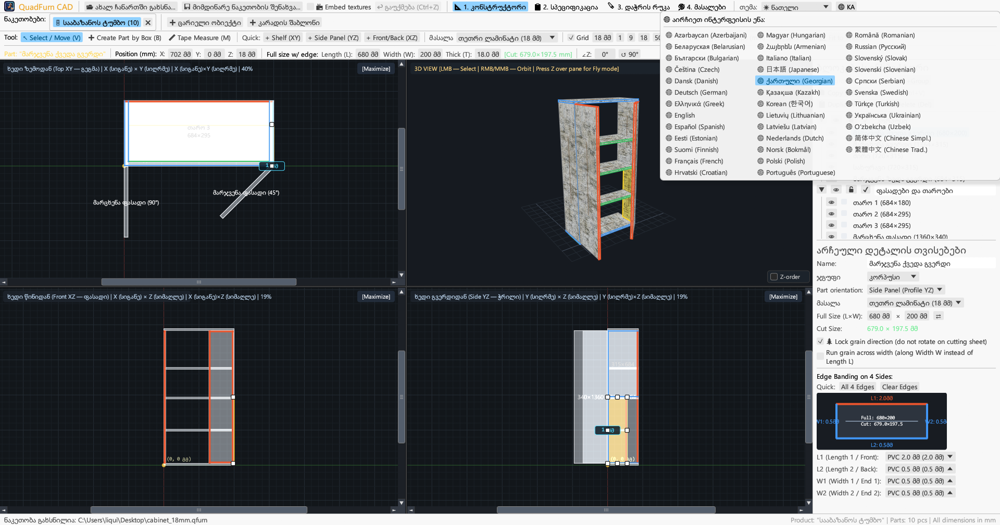

სწრაფი CAD ავეჯის ოსტატებისთვის. სინქრონული 4-ხედიანი მოდელირება, წიბოს ავტომატური გამოკლება და ფურცლების გაჭრა — ხელმისაწვდომია ბრაუზერში და კომპიუტერზე.

აერთიანებს 4 პროექციაში ხაზვას, ზუსტ რიცხვით პოზიციონირებას და გაჭრის რუკების ოპტიმიზაციას.
ერთდროული მუშაობა სამ ორთოგონალურ პროექციაში (ზემოდან XY, წინიდან XZ, გვერდიდან YZ) და ინტერაქტიულ 3D-ფანჯარაში.
კოორდინატების (X, Y, Z), ზომების (სიგრძე × სიგანე × სისქე) და კუთხის (∠Z) მყისიერი შეყვანა ჩაშენებული კალკულატორით.
PVC/ABS წიბოს (0.4–2.0 მმ) დადება 4 წახნაგიდან ნებისმიერზე და გაჭრის ზომების მომენტალური გამოთვლა.
სწრაფი გაჭრის ალგორითმი ხის ტექსტურის მიმართულების, ჭრის სიგანის და ნარჩენების აღრიცხვის გათვალისწინებით.
რამდენიმე პროექტთან ერთდროული მუშაობა ჩანართებში. დეტალების კოპირება და ჩასმა მასალების და წიბოების ავტოგადატანით.
საბეჭდად მზა A4 ალბომის ექსპორტი: სპეციფიკაცია, 4 პროექცია, გაჭრის რუკები და მასალების ხარჯთაღრიცხვა +15% მარაგით.





სრულად ავტონომიური ბინარული ფაილები გარე დამოკიდებულებების გარეშე.
პორტატული შესრულებადი ფაილი, არ საჭიროებს ინსტალაციას.
უნივერსალური QuadFurn.app ბანდლი Apple Silicon (M1–M4) და Intel-ისთვის.